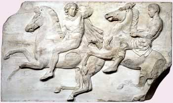
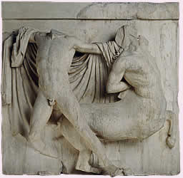

The Parthenon was richly decorated with sculptures. Inside was the great gold and ivory statue of Athena Parthenos. The sculptor Phidias covered the statue with pure gold, which he made sure could be removed if Athens was in need of it.

Horsemen from the west frieze of the Parthenon
The Parthenon, the centrepiece of the Acropolis, is a Doric building with Ionic features mixed in. There were eight columns along the front, and seventeen on each side, which was more than for most Doric temples.

A marble metope from the Parthenon, showing a Greek fighting a Centaur
The decoration on the Parthenon is organised into three elements: there are two triangular pediments at either end, panels called metopes around the outer wall, and a carved stone frieze on the outside of the inner building.